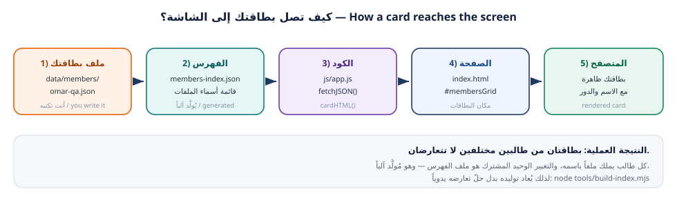

سنتعرّف اليوم على مشروع الفريق: موقع ويب بسيط اسمه class-team-hub (دليل فريق الصف).
سيفتح كل طالب موقع الفريق على جهازه، ويقرأ بنية الملفات، ويفهم دورة البيانات من ملف
JSON إلى الصفحة المعروضة في المتصفح. وفي نهاية الورقة تشغّل الموقع بنفسك وتوثّق ذلك
بالأدلة.
Today you meet the team project: a simple static website called class-team-hub.
Every student will open it on their machine, read its file structure, and understand the data
flow from a JSON card file to the rendered page. By the end you will run the site yourself and
document it with evidence.
git clone وفهم ما يجلبه فعلاً إلى جهازك (الملفات + التاريخ + الإعدادات).origin والمستودعات المحلية، وقراءة ذلك من git remote -v.data/members/ إلى البطاقة المرسومة على الشاشة.git log وgit show وgit diff لفهم ما تغيّر ومَن غيّره.لا تعمل على main أبداً. كل تعديل — ولو كان سطراً واحداً — يبدأ من فرع (branch) خاص
بك. هذا يحمي عمل الفريق ويجعل مراجعة تعديلاتك سهلة. سنفصّل ذلك في ورقة العمل 03.
أمر git clone لا ينسخ الملفات فقط، بل ينشئ نسخة كاملة من المستودع على جهازك: كل
الملفات، وكل الالتزامات في التاريخ، وكل الفروع، وكل إعدادات الربط بالخادم. وبعد
الاستنساخ يصبح لديك مستودع محلي مربوط بالمستودع البعيد باسم origin.
git clone copies the whole repository — files, full commit history, all branches, and the
remote connection settings — into a local repository that knows its remote as origin.
الهدف: مجلد مشاريع منظّم + نسخة كاملة من مستودع الفريق على جهازك.
الخطوة 1 — أنشئ مجلداً واحداً لكل مشاريعك (سنسمّيه projects):
$ cd ~ $ mkdir -p projects $ cd projects $ pwd /home/sara/projects
لأن الطرفية تعمل دائماً داخل «مجلد حالي». جمع المشاريع في projects/ يجعل التنقّل
سهلاً، ويمنع أشهر خطأ للطلاب: تنفيذ أوامر Git داخل مجلد غير مستودع، فتظهر رسالة
fatal: not a git repository.
الخطوة 2 — استنسخ المشروع. المدرب سلّمك رابط المستودع مسبقاً. مع class-team-hub
سيعمل كالتالي:
$ git clone https://github.com/school-git-workshop/class-team-hub.git Cloning into 'class-team-hub'... remote: Enumerating objects: 87, done. remote: Counting objects: 100% (87/87), done. Unpacking objects: 100% (87/87), done. $ cd class-team-hub $ ls CODE_OF_CONDUCT.md CONTRIBUTING.md LICENSE README.md assets css data docs index.html js sandbox tests tools
استبدل الرابط بالصيغة: git@github.com:school-git-workshop/class-team-hub.git
ويفضّل أن يكون مفتاح SSH قد اختُبر في ورقة العمل 01.
الخطوة 3 — تأكد من الربط بالمستودع البعيد:
$ git remote -v origin https://github.com/school-git-workshop/class-team-hub.git (fetch) origin https://github.com/school-git-workshop/class-team-hub.git (push) $ git status On branch main Your branch is up to date with 'origin/main'. nothing to commit, working tree clean
………………………………git remote -v:$ git remote -v
git status الحالية:$ git status
الهدف: أن تصف لغة المشروع وملفاته وموضع بياناتك فيه.
الخطوة 1 — اعرض الشجرة الكاملة:
$ ls -la $ find . -type f -not -path "./.git/*" | sort ./.github/PULL_REQUEST_TEMPLATE.md ./.gitignore ./CODE_OF_CONDUCT.md ./CONTRIBUTING.md ./LICENSE ./README.md ./css/style.css ./data/members-bundle.js ./data/members-index.json ./data/members/00-template.json ./data/members/01-example-student.json ./data/members/99-you-instructor.json ./data/members/ali-h.json ./data/members/nour-dev.json ./data/schedule.md ./data/site-config.json ./docs/git-cheatsheet.md ./docs/team-workflow.md ./docs/troubleshooting.md ./index.html ./js/app.js ./sandbox/conflict-lab.md ./sandbox/team-slogan.txt ./tests/validate-members.mjs ./tools/build-index.mjs
الخطوة 2 — املأ جدول الفهم التالي من قراءتك للملفات:
| الملف | ما هو دوره؟ | من يعدّله؟ |
|---|---|---|
index.html |
………………………………………… | ……………………… |
css/style.css |
………………………………………… | ……………………… |
js/app.js |
………………………………………… | ……………………… |
data/site-config.json |
………………………………………… | ……………………… |
data/members/<username>.json |
………………………………………… | ……………………… |
data/members-index.json |
………………………………………… | ……………………… |
tools/build-index.mjs |
………………………………………… | ……………………… |
.gitignore |
………………………………………… | ……………………… |
الخطوة 3 — اقرأ ملف الإعدادات وملف البطاقة النموذجي:
$ cat data/site-config.json { "siteTitle": "دليل فريق الصف", "subtitle": "فريق ورشة Git وGitHub — كل بطاقة أضافها طالب من فرعه الخاص ثم دمجناها معاً.", "semester": "الفصل الدراسي الأول 2026", "instructor": "اسم المدرب", "primaryColor": "#12203C", "accentColor": "#E8620C" ... } $ cat data/members/00-template.json { "_comment": "انسخ هذا الملف باسم مستخدمك على GitHub ثم املأ الحقول …", "fullName": "الاسم الكامل", "github": "your-github-username", "role": "مطوّر", "favoriteCommand": "git status", "message": "اكتب جملة واحدة تعرّف بها عن نفسك وعمّا تعلمته في الورشة.", "tags": ["HTML", "CSS"], "joinedAt": "2026-10-06" }
اكتب بلغتك (سطران لكل ملف) دور هذه الملفات الأربعة:
js/app.js وdata/members-index.json وtools/build-index.mjs و.gitignore
……………………………………………………………………………………………………………………
الهدف: رؤية المشروع يعمل فعلاً، وفهم لماذا قد تفشل طريقة الفتح المباشر.
هناك طريقتان لفتح الموقع. الفتح المباشر لملف index.html يعمل لأن كود المشروع يحتوي
نسخة مدمجة من البيانات (data/members-bundle.js). لكن الطريقة الاحترافية — والمستخدمة
في GitHub Pages — هي تشغيل خادم محلي، لأن المتصفح يمنع JavaScript من قراءة ملفات
JSON عبر fetch عند العمل بنظام الملفات file://.
You can open index.html directly (the project ships a bundled data file), but the
professional way — and the way GitHub Pages works — is a local server, because browsers
block fetch reads of JSON files under the file:// scheme.
الطريق أ — الفتح المباشر:
افتح مجلد class-team-hub ثم انقر نقراً مزدوجاً على index.html يُفتح المتصفح وتظهر الصفحة وبطاقتان تجريبيتان
الطريق ب — خادم محلي (الموصى به):
$ cd ~/projects/class-team-hub $ python3 -m http.server 8000 Serving HTTP on 0.0.0.0 port 8000 (http://0.0.0.0:8000/) ... # افتح المتصفح على العنوان التالي / open in the browser: # http://localhost:8000 # لإيقاف الخادم اضغط Ctrl+C
الطريقة الأسرع: افتح مجلد المشروع في VS Code ثم انقر بزر الفأرة الأيمن على
index.html ← Open with Live Server. تظهر الصفحة وتُحدَّث تلقائياً عند أي تعديل.
افحص ما تراه واربطه بالبنية: - ما عنوان الموقع الظاهر في الشريط العلوي؟ …………………………………… - كم بطاقة تظهر حالياً؟ …………………………………… - من أي ملف جاء اسم المدرب في الشريط؟ ……………………………………
افتح أدوات المطوّر واطلع على رسائل الطرفية:
اضغط F12 ثم اختر تبويب Console يجب ألّا تظهر أي رسائل حمراء للأخطاء إن ظهر "Failed to fetch" فالسبب غالباً أنك فتحت الملف بـ file://
…………………………………الهدف: فهم كيف يقرأ الكود ملفات البطاقات ويبني الواجهة — وهو الملف الذي ستطوّره لاحقاً.
الموقع لا يحتوي بطاقات مكتوبة يدوياً في HTML. بل يقرأ data/members-index.json
لمعرفة أسماء ملفات البطاقات، ثم يقرأ كل بطاقة، ثم يبني HTML لها ويعرضها. هذا يسمّى
فصل البيانات عن العرض — وهو سبب عدم حدوث تعارض عند إضافة بطاقات جديدة.
The page contains no hard-coded cards. It reads data/members-index.json for the list of
card files, loads each card, then builds the HTML for it. This is separation of data from
presentation — and the reason two students can add cards without conflicting.

نشاط: افتح js/app.js وابحث عن الأسماء التالية، واكتب ماذا تفعل:
| الاسم في الكود | وظيفته | السطر التقريبي |
|---|---|---|
DATA |
………………………………………… | ……… |
fetchJSON() |
………………………………………… | ……… |
cardHTML() |
………………………………………… | ……… |
render() |
………………………………………… | ……… |
window.MEMBERS_DATA |
………………………………………… | ……… |
أضف اسم ملف بطاقة غير موجود إلى data/members-index.json، ثم أعد تحميل الصفحة
(بـ Ctrl+Shift+R). ماذا حدث؟ ولماذا لم تتعطّل الصفحة كلها؟
الهدف: مهارة أساسية في العمل الجماعي: معرفة من عدّل ماذا ومتى، ومراجعة تعديلات زميل.
الخطوة 1 — استعرض التاريخ بشكل مقروء:
$ git log --oneline -10 a1b2c3d (HEAD -> main, origin/main) Merge pull request #7 from nour-dev/feature/nour-card 9f8e7d6 feat(members): add card for nour-dev c4d5e6f Merge pull request #6 from ali-h/feature/ali-card 1a2b3c4 feat(members): add card for ali-h 8de1e7a chore: initial commit of class-team-hub $ git log --oneline --graph --all --decorate * a1b2c3d (HEAD -> main, origin/main) Merge pull request #7 from nour-dev/feature/nour-card |\ | * 9f8e7d6 feat(members): add card for nour-dev |/ * 5e6f7a8 Merge pull request #6 from ali-h/feature/ali-card |\ | * 1a2b3c4 feat(members): add card for ali-h |/ * 8de1e7a chore: initial commit of class-team-hub $ git shortlog -sn 4 nour-dev 3 ali-h 2 سارة الحسن 1 Workshop Instructor
الخطوة 2 — افحص تعديلاً واحداً بالتفصيل:
$ git show 9f8e7d6 --stat commit 9f8e7d6a1b2c3d4e5f6a7b8c9d0e1f2a3b4c5d6e Author: nour-dev <nour@example.com> Date: Mon Oct 6 10:24:11 2026 +0300 feat(members): add card for nour-dev data/members-bundle.js | 13 +++++++++++++ data/members-index.json | 3 ++- data/members/nour-dev.json | 9 +++++++++ 3 files changed, 24 insertions(+), 1 deletion(-) $ git log --oneline -- data/members/nour-dev.json 9f8e7d6 feat(members): add card for nour-dev
الخطوة 3 — مقارنة بين نسختين (وهذا ما ستراه داخل طلب السحب):
$ git diff HEAD~3..HEAD --stat data/members/ali-h.json | 9 +++++++++ data/members/nour-dev.json | 9 +++++++++ data/members-index.json | 5 +++-- 3 files changed, 22 insertions(+), 1 deletion(-)
git log --oneline -5 من مستودعك:$ git log --oneline -5
git shortlog -sn؟ ……………………………………هل أنّ أهمل data/members-bundle.js؟ لا هو ملف مُولَّد آلياً، وقد سترى اسمه في كل
تعديل. لا تعدّله بيدك؛ سيُعاد توليده تلقائياً.
لماذا يظهر ملف الفهرس في كل التعديلات؟ لأنه يسجّل عدد البطاقات وقائمتها، فيتغيّر كلما
أضاف أحدهم بطاقة.
س1. ما الفرق بين git clone وgit pull؟ ومتى تستخدم كل واحد؟
س2. فتح زميلك index.html مباشرة ورأى خطأ Failed to fetch، ما السبب وما الحل؟
س3. لماذا لا يحدث تعارض عندما يضيف طالبان بطاقتين مختلفتين في الوقت نفسه؟
projects منشأ والمستودع مستنسخ داخله بنجاحgit remote -v يُظهر origin صحيحاً، وgit status نظيفjs/app.js مملوء (5 دوال)git log واسم أكثر المساهمين مدوّنان| البند | القيمة |
|---|---|
| مسار المستودع على جهازي | ………………………………… |
| طريقة تشغيل الموقع | ☐ مباشر ☐ خادم محلي ☐ Live Server |
| عدد البطاقات الظاهرة | ………… |
| أكثر مساهم في الفريق | ………………………………… |
| الوقت المستغرق | ………… |
في ورقة العمل 03 ستضيف بطاقتك الخاصة: تنشئ فرعاً، وتكتب ملف JSON، وتلتزم، وترفع فرعك، ثم تفتح طلب سحب (Pull Request) وتعرضه لزميل للمراجعة.